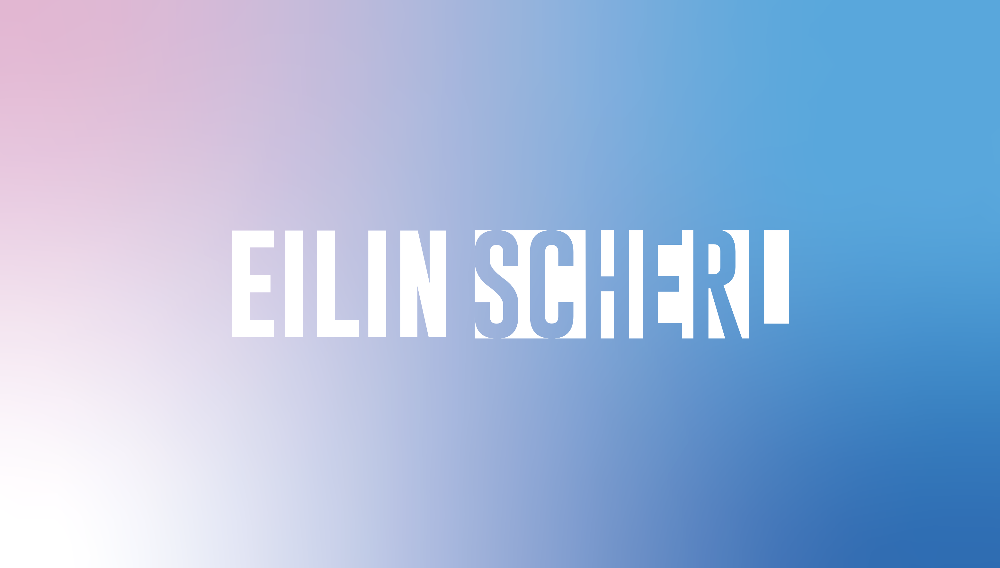
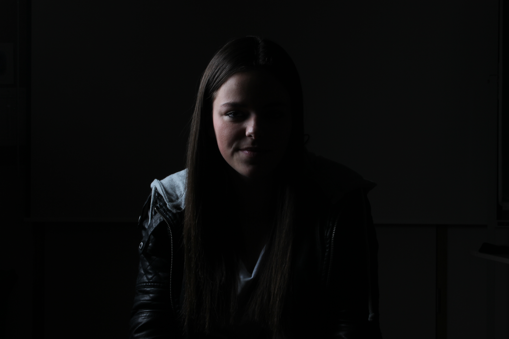

Portfolio
Hallo! Ich bin Eilin Scherl, Grafik- und Mediendesignerin aus Leidenschaft.
Mein visueller und kreativer Weg begann an der Kreativhauptschule Müllerstraße und führte mich an die Ferrarischule im Zweig „Mediendesign“.
Genau dort wurde mir bewusst, dass dies mein absoluter Traumberuf ist und ich unbedingt in diesem Bereich tätig sein möchte.
Mit meiner erfolgreich abgeschlossenen Lehre als Druckvorstufentechnikerin und Medienfachfrau beherrsche ich heute das gesamte Spektrum von der
ersten Idee über die kreative Gestaltung in der Adobe Creative Cloud bis hin zur fehlerfreien technischen Druckvorbereitung
Wofür mein Herz schlägt
Mein Logo & Meine Philosophie
Das Logo „DESIGN“ habe ich selbst entworfen: Die Monogramm-Buchstaben ES verbinden meinen Namen mit einem Herz, das meine Leidenschaft für Gestaltung in
all ihren Facetten symbolisiert. Die Kombination aus klarer Formsprache und einer eleganten Serifenschrift verleiht dem Auftritt eine künstlerische Note.
Wohin die Reise geht
Ich zeichne mich durch eine strukturierte, vielseitige Arbeitsweise aus und strebe danach, meine Fähigkeiten im Mediendesign kontinuierlich auszubauen.
Ich freue mich auf neue kreative Herausforderungen, spannende Projekte und ein dynamisches Umfeld, in dem ich meine Qualifikationen voll entfalten kann.